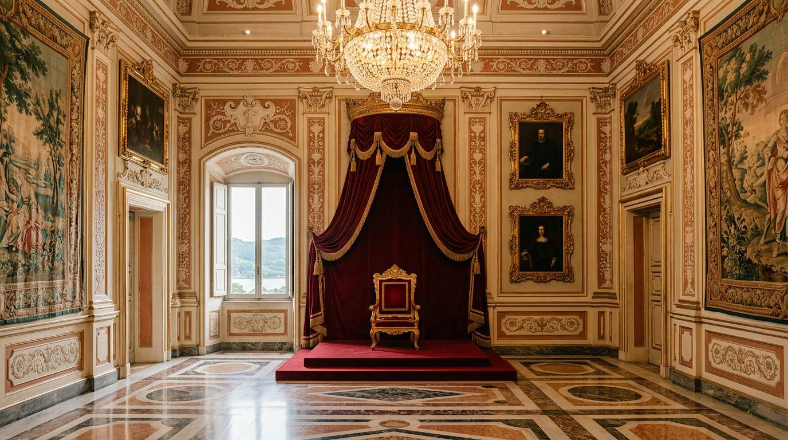

Il Palazzo Apostolico come museo — cosa si vede dopo il 2016.

Per quasi quattro secoli il piano nobile del Palazzo di Castel Gandolfo è stato un mondo chiuso, riservato al Papa e ai suoi più stretti collaboratori. Dal 22 ottobre 2016 chiunque può salire lo scalone ed entrare nelle stanze dove i pontefici ricevevano, lavoravano, pregavano e dormivano. Ecco cosa si vede oggi, e cosa è cambiato con il ritorno dei papi.
Un regalo in tre tappe
L'apertura fu graduale. Papa Francesco, che a differenza dei predecessori preferiva trascorrere l'estate a Roma, nel 2014 aprì al pubblico i giardini e l'anno successivo una parte del Palazzo come galleria di ritratti (CNS / The Boston Pilot). Il 21 ottobre 2016 i Musei Vaticani presentarono l'ultima tappa: l'Appartamento Pontificio, “per secoli privatissimo rifugio estivo dei Pontefici”, aperto al pubblico dal giorno seguente con un percorso ideato e gestito dagli stessi Musei (Musei Vaticani). Le stanze furono aperte senza modifiche strutturali (Wikipedia).
All'inaugurazione il direttore dei Musei Vaticani Antonio Paolucci promise ai visitatori “la pura Bellezza”: dal grande terrazzo “l'occhio azzurro del lago e i monti ricoperti di intatti boschi”, e nelle stanze “il brusio della storia” (Musei Vaticani).
Primo piano: i ritratti dei papi
Il biglietto, acquistabile alla biglietteria del Palazzo o sul sito dei Musei Vaticani, dà accesso alla galleria del primo piano, con i ritratti di tutti i papi dal Cinquecento ai giorni nostri, e agli ambienti del secondo piano dove si svolgeva la vita quotidiana dei pontefici (Vatican News). Al primo piano trovano spazio anche le esposizioni temporanee: nel febbraio 2024 è stata inaugurata “Castel Gandolfo 1944”, dedicata ai mesi in cui Pio XII aprì le Ville a 12-13 mila sfollati e in cui nel letto del Papa nacquero oltre quaranta bambini (Vatican News). L'audioguida racconta cinque secoli di storia dei papi attraverso dipinti, reliquie, paramenti, uniformi e curiosità (Musei Vaticani).
Secondo piano: dal trono alla camera da letto
Il percorso dell'Appartamento segue la sequenza del cerimoniale. Si comincia dal Salone degli Svizzeri, dove montava la guardia, e si prosegue con la Sala del Trono e la Sala del Concistoro, anticamere degli ambienti privati. Poi le stanze riservate all'uso esclusivo del Pontefice: la Biblioteca, lo Studiolo privato, gli uffici del segretario particolare e del segretario aggiunto, dove trovava posto anche il cameriere personale del Papa (Musei Vaticani).
“I luoghi dove il Papa riceveva, viveva, scriveva, dormiva, pregava nella sua cappella privata.”Barbara Jatta, direttrice dei Musei Vaticani, 2024
Due stanze valgono da sole la visita. La camera da letto del Papa, che nel 1944 Pio XII riservò alle partorienti nascoste nel Palazzo, e la Cappella privata, dove per la prima volta due pontefici, Benedetto XVI e il neoeletto Francesco, pregarono insieme (Musei Vaticani). Nella cappella è esposta una copia della Madonna di Częstochowa (Vatican News). Nello stesso letto morirono Pio XII e Paolo VI, e Giovanni Paolo II vi trascorse la convalescenza dopo l'attentato del 1981 (Religion News Service).
Le stanze su richiesta
Alcuni ambienti di solito non rientrano nel percorso ordinario ma, ha spiegato la direttrice Barbara Jatta, possono essere aperti su richiesta: la cappella di Urbano VIII affrescata da Simone Lagi, la sala del biliardo e la sala della musica (Vatican News). Il 17 e 18 maggio 2026, per la Giornata internazionale dei musei, i Musei Vaticani hanno aperto in via eccezionale tre sale dell'appartamento dedicate allo svago: la Sala del Biliardo, con due dipinti di Giovanni Angeloni su Clemente XIV, la Sala della Televisione e la Sala della Musica, dove si conserva il giradischi di Paolo VI (Musei Vaticani). Fuori dal Palazzo, il biglietto comprende il Giardino del Moro e il Giardino Segreto, affacciati su Roma e sul lago (Vatican News).
Museo e residenza, dal 2026
Con Leone XIV la storia ha fatto un passo indietro. Nell'estate 2025 il Papa soggiornò a Villa Barberini, lasciando il Palazzo al museo; nel luglio 2026 è tornato ad abitare il Palazzo Apostolico (Wikipedia). In primavera alcune testate avevano scritto che il museo avrebbe chiuso per sempre, ma le cose sono andate diversamente: il museo è rimasto chiuso durante il soggiorno del Papa, dal 5 al 27 luglio, per riaprire dopo il suo rientro a Roma (Rome Reports). Prima di partire conviene controllare giorni e orari sul calendario ufficiale 2026-2027 del Palazzo Papale (Musei Vaticani).